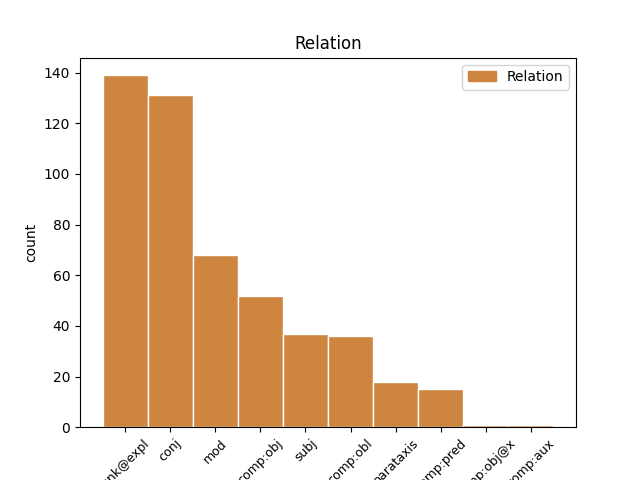
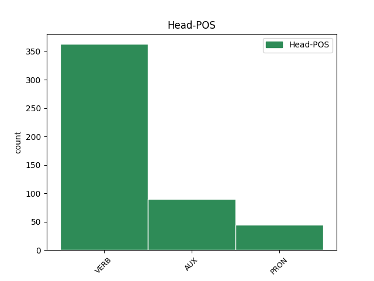
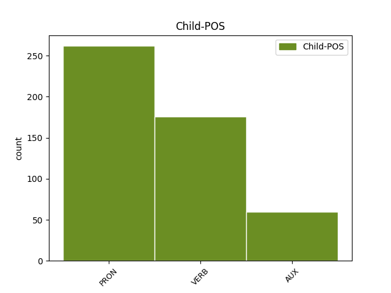

Distribution of features within this leaf



Agreement Rules sorted by frequency.
- When the dependent token is the unk@expl(unk@expl) of the head token, and the head token is VERB
1 Rexuveneceu rexuvenecer VERB Vei30s Mood=Ind|Number=Sing|Person=3|Tense=Past|VerbForm=Fin 0 _ _ _
2 se se PRON Rao3aa Clitic=Yes|Gender=Com|Person=3|PronType=Prs 1 unk@expl _ _
3 o _ _ _ _ 0 _ _ _
4 plantel _ _ _ _ 0 _ _ _
5 e _ _ _ _ 0 _ _ _
6 a _ _ _ _ 0 _ _ _
7 perda _ _ _ _ 0 _ _ _
8 de _ _ _ _ 0 _ _ _
9 traballo _ _ _ _ 0 _ _ _
10 non _ _ _ _ 0 _ _ _
11 foi _ _ _ _ 0 _ _ _
12 neta _ _ _ _ 0 _ _ _
13 . _ _ _ _ 0 _ _ _
1 Rexuveneceu rexuvenecer VERB Vei30s Mood=Ind|Number=Sing|Person=3|Tense=Past|VerbForm=Fin 0 _ _ _
2 se _ _ _ _ 0 _ _ _
3 o _ _ _ _ 0 _ _ _
4 plantel _ _ _ _ 0 _ _ _
5 e _ _ _ _ 0 _ _ _
6 a _ _ _ _ 0 _ _ _
7 perda _ _ _ _ 0 _ _ _
8 de _ _ _ _ 0 _ _ _
9 traballo _ _ _ _ 0 _ _ _
10 non _ _ _ _ 0 _ _ _
11 foi ser AUX Vei30s Mood=Ind|Number=Sing|Person=3|Tense=Past|VerbForm=Fin 1 conj _ _
12 neta _ _ _ _ 0 _ _ _
13 . _ _ _ _ 0 _ _ _
1 Segundo _ _ _ _ 0 _ _ _
2 Cagiao _ _ _ _ 0 _ _ _
3 , _ _ _ _ 0 _ _ _
4 isto _ _ _ _ 0 _ _ _
5 foi _ _ _ _ 0 _ _ _
6 o _ _ _ _ 0 _ _ _
7 que _ _ _ _ 0 _ _ _
8 dificultou dificultar VERB Vei30s Mood=Ind|Number=Sing|Person=3|Tense=Past|VerbForm=Fin 0 _ _ _
9 os o PRON Ddmp Gender=Masc|Number=Plur|Person=3|PronType=Art 8 comp:obj _ _
10 que _ _ _ _ 0 _ _ _
11 ían _ _ _ _ 0 _ _ _
12 ser _ _ _ _ 0 _ _ _
13 derradeiros _ _ _ _ 0 _ _ _
14 pasos _ _ _ _ 0 _ _ _
15 de _ _ _ _ 0 _ _ _
16 a _ _ _ _ 0 _ _ _
17 regulación _ _ _ _ 0 _ _ _
18 laboral _ _ _ _ 0 _ _ _
19 de _ _ _ _ 0 _ _ _
20 as _ _ _ _ 0 _ _ _
21 antigas _ _ _ _ 0 _ _ _
22 Astano _ _ _ _ 0 _ _ _
23 e _ _ _ _ 0 _ _ _
24 Bazán _ _ _ _ 0 _ _ _
25 , _ _ _ _ 0 _ _ _
26 denominada _ _ _ _ 0 _ _ _
27 Navantia _ _ _ _ 0 _ _ _
28 dende _ _ _ _ 0 _ _ _
29 esta _ _ _ _ 0 _ _ _
30 semana _ _ _ _ 0 _ _ _
31 . _ _ _ _ 0 _ _ _
1 Segundo _ _ _ _ 0 _ _ _
2 Cagiao _ _ _ _ 0 _ _ _
3 , _ _ _ _ 0 _ _ _
4 isto _ _ _ _ 0 _ _ _
5 foi _ _ _ _ 0 _ _ _
6 o _ _ _ _ 0 _ _ _
7 que _ _ _ _ 0 _ _ _
8 dificultou _ _ _ _ 0 _ _ _
9 os o PRON Ddmp Gender=Masc|Number=Plur|Person=3|PronType=Art 0 _ _ _
10 que _ _ _ _ 0 _ _ _
11 ían ir AUX Vii30p Mood=Ind|Number=Plur|Person=3|Tense=Imp|VerbForm=Fin 9 mod _ _
12 ser _ _ _ _ 0 _ _ _
13 derradeiros _ _ _ _ 0 _ _ _
14 pasos _ _ _ _ 0 _ _ _
15 de _ _ _ _ 0 _ _ _
16 a _ _ _ _ 0 _ _ _
17 regulación _ _ _ _ 0 _ _ _
18 laboral _ _ _ _ 0 _ _ _
19 de _ _ _ _ 0 _ _ _
20 as _ _ _ _ 0 _ _ _
21 antigas _ _ _ _ 0 _ _ _
22 Astano _ _ _ _ 0 _ _ _
23 e _ _ _ _ 0 _ _ _
24 Bazán _ _ _ _ 0 _ _ _
25 , _ _ _ _ 0 _ _ _
26 denominada _ _ _ _ 0 _ _ _
27 Navantia _ _ _ _ 0 _ _ _
28 dende _ _ _ _ 0 _ _ _
29 esta _ _ _ _ 0 _ _ _
30 semana _ _ _ _ 0 _ _ _
31 . _ _ _ _ 0 _ _ _
1 Nunca _ _ _ _ 0 _ _ _
2 foi ser AUX Vei30s Mood=Ind|Number=Sing|Person=3|Tense=Past|VerbForm=Fin 0 _ _ _
3 tan _ _ _ _ 0 _ _ _
4 barato _ _ _ _ 0 _ _ _
5 alugar _ _ _ _ 0 _ _ _
6 un _ _ _ _ 0 _ _ _
7 piso _ _ _ _ 0 _ _ _
8 en _ _ _ _ 0 _ _ _
9 esta _ _ _ _ 0 _ _ _
10 cidade _ _ _ _ 0 _ _ _
11 e _ _ _ _ 0 _ _ _
12 , _ _ _ _ 0 _ _ _
13 aínda _ _ _ _ 0 _ _ _
14 así _ _ _ _ 0 _ _ _
15 , _ _ _ _ 0 _ _ _
16 fontes _ _ _ _ 0 _ _ _
17 inmobiliarias _ _ _ _ 0 _ _ _
18 sitúan situar VERB Vpi30p Mood=Ind|Number=Plur|Person=3|Tense=Pres|VerbForm=Fin 2 conj _ _
19 en _ _ _ _ 0 _ _ _
20 máis _ _ _ _ 0 _ _ _
21 de _ _ _ _ 0 _ _ _
22 6.000 _ _ _ _ 0 _ _ _
23 os _ _ _ _ 0 _ _ _
24 que _ _ _ _ 0 _ _ _
25 teñen _ _ _ _ 0 _ _ _
26 dificultades _ _ _ _ 0 _ _ _
27 para _ _ _ _ 0 _ _ _
28 atopar _ _ _ _ 0 _ _ _
29 inquilinos _ _ _ _ 0 _ _ _
30 . _ _ _ _ 0 _ _ _
1 Emilio _ _ _ _ 0 _ _ _
2 Cagiao _ _ _ _ 0 _ _ _
3 , _ _ _ _ 0 _ _ _
4 secretario _ _ _ _ 0 _ _ _
5 de _ _ _ _ 0 _ _ _
6 a _ _ _ _ 0 _ _ _
7 CIG _ _ _ _ 0 _ _ _
8 en _ _ _ _ 0 _ _ _
9 Ferrol _ _ _ _ 0 _ _ _
10 , _ _ _ _ 0 _ _ _
11 di _ _ _ _ 0 _ _ _
12 que _ _ _ _ 0 _ _ _
13 " _ _ _ _ 0 _ _ _
14 e _ _ _ _ 0 _ _ _
15 unha _ _ _ _ 0 _ _ _
16 verdadeira _ _ _ _ 0 _ _ _
17 vergonza _ _ _ _ 0 _ _ _
18 que _ _ _ _ 0 _ _ _
19 se _ _ _ _ 0 _ _ _
20 estea _ _ _ _ 0 _ _ _
21 xogando _ _ _ _ 0 _ _ _
22 con _ _ _ _ 0 _ _ _
23 os _ _ _ _ 0 _ _ _
24 traballadores _ _ _ _ 0 _ _ _
25 por _ _ _ _ 0 _ _ _
26 non _ _ _ _ 0 _ _ _
27 dar _ _ _ _ 0 _ _ _
28 lle _ _ _ _ 0 _ _ _
29 solución _ _ _ _ 0 _ _ _
30 a _ _ _ _ 0 _ _ _
31 o _ _ _ _ 0 _ _ _
32 que _ _ _ _ 0 _ _ _
33 eles _ _ _ _ 0 _ _ _
34 chaman _ _ _ _ 0 _ _ _
35 " _ _ _ _ 0 _ _ _
36 flecos _ _ _ _ 0 _ _ _
37 " _ _ _ _ 0 _ _ _
38 , _ _ _ _ 0 _ _ _
39 cando _ _ _ _ 0 _ _ _
40 a _ _ _ _ 0 _ _ _
41 verdadeira _ _ _ _ 0 _ _ _
42 realidade _ _ _ _ 0 _ _ _
43 é _ _ _ _ 0 _ _ _
44 por _ _ _ _ 0 _ _ _
45 que _ _ _ _ 0 _ _ _
46 os o PRON Ddmp Gender=Masc|Number=Plur|Person=3|PronType=Art 49 subj _ _
47 de _ _ _ _ 0 _ _ _
48 Comisións _ _ _ _ 0 _ _ _
49 queren querer VERB Vpi30p Mood=Ind|Number=Plur|Person=3|Tense=Pres|VerbForm=Fin 0 _ _ _
50 prexubilar _ _ _ _ 0 _ _ _
51 tamén _ _ _ _ 0 _ _ _
52 algúns _ _ _ _ 0 _ _ _
53 traballadores _ _ _ _ 0 _ _ _
54 de _ _ _ _ 0 _ _ _
55 as _ _ _ _ 0 _ _ _
56 compañias _ _ _ _ 0 _ _ _
57 auxiliares _ _ _ _ 0 _ _ _
58 con _ _ _ _ 0 _ _ _
59 o _ _ _ _ 0 _ _ _
60 pretexto _ _ _ _ 0 _ _ _
61 de _ _ _ _ 0 _ _ _
62 que _ _ _ _ 0 _ _ _
63 poden _ _ _ _ 0 _ _ _
64 ter _ _ _ _ 0 _ _ _
65 garantía _ _ _ _ 0 _ _ _
66 de _ _ _ _ 0 _ _ _
67 emprego _ _ _ _ 0 _ _ _
68 . _ _ _ _ 0 _ _ _
1 Emilio _ _ _ _ 0 _ _ _
2 Cagiao _ _ _ _ 0 _ _ _
3 , _ _ _ _ 0 _ _ _
4 secretario _ _ _ _ 0 _ _ _
5 de _ _ _ _ 0 _ _ _
6 a _ _ _ _ 0 _ _ _
7 CIG _ _ _ _ 0 _ _ _
8 en _ _ _ _ 0 _ _ _
9 Ferrol _ _ _ _ 0 _ _ _
10 , _ _ _ _ 0 _ _ _
11 di _ _ _ _ 0 _ _ _
12 que _ _ _ _ 0 _ _ _
13 " _ _ _ _ 0 _ _ _
14 e _ _ _ _ 0 _ _ _
15 unha _ _ _ _ 0 _ _ _
16 verdadeira _ _ _ _ 0 _ _ _
17 vergonza _ _ _ _ 0 _ _ _
18 que _ _ _ _ 0 _ _ _
19 se se PRON Rao3aa Clitic=Yes|Gender=Com|Person=3|PronType=Prs 20 unk@expl _ _
20 estea estar AUX Vps30s Mood=Sub|Number=Sing|Person=3|Tense=Pres|VerbForm=Fin 0 _ _ _
21 xogando _ _ _ _ 0 _ _ _
22 con _ _ _ _ 0 _ _ _
23 os _ _ _ _ 0 _ _ _
24 traballadores _ _ _ _ 0 _ _ _
25 por _ _ _ _ 0 _ _ _
26 non _ _ _ _ 0 _ _ _
27 dar _ _ _ _ 0 _ _ _
28 lle _ _ _ _ 0 _ _ _
29 solución _ _ _ _ 0 _ _ _
30 a _ _ _ _ 0 _ _ _
31 o _ _ _ _ 0 _ _ _
32 que _ _ _ _ 0 _ _ _
33 eles _ _ _ _ 0 _ _ _
34 chaman _ _ _ _ 0 _ _ _
35 " _ _ _ _ 0 _ _ _
36 flecos _ _ _ _ 0 _ _ _
37 " _ _ _ _ 0 _ _ _
38 , _ _ _ _ 0 _ _ _
39 cando _ _ _ _ 0 _ _ _
40 a _ _ _ _ 0 _ _ _
41 verdadeira _ _ _ _ 0 _ _ _
42 realidade _ _ _ _ 0 _ _ _
43 é _ _ _ _ 0 _ _ _
44 por _ _ _ _ 0 _ _ _
45 que _ _ _ _ 0 _ _ _
46 os _ _ _ _ 0 _ _ _
47 de _ _ _ _ 0 _ _ _
48 Comisións _ _ _ _ 0 _ _ _
49 queren _ _ _ _ 0 _ _ _
50 prexubilar _ _ _ _ 0 _ _ _
51 tamén _ _ _ _ 0 _ _ _
52 algúns _ _ _ _ 0 _ _ _
53 traballadores _ _ _ _ 0 _ _ _
54 de _ _ _ _ 0 _ _ _
55 as _ _ _ _ 0 _ _ _
56 compañias _ _ _ _ 0 _ _ _
57 auxiliares _ _ _ _ 0 _ _ _
58 con _ _ _ _ 0 _ _ _
59 o _ _ _ _ 0 _ _ _
60 pretexto _ _ _ _ 0 _ _ _
61 de _ _ _ _ 0 _ _ _
62 que _ _ _ _ 0 _ _ _
63 poden _ _ _ _ 0 _ _ _
64 ter _ _ _ _ 0 _ _ _
65 garantía _ _ _ _ 0 _ _ _
66 de _ _ _ _ 0 _ _ _
67 emprego _ _ _ _ 0 _ _ _
68 . _ _ _ _ 0 _ _ _
1 Era _ _ _ _ 0 _ _ _
2 o _ _ _ _ 0 _ _ _
3 Ferrol _ _ _ _ 0 _ _ _
4 de _ _ _ _ 0 _ _ _
5 Pablo _ _ _ _ 0 _ _ _
6 Iglesias _ _ _ _ 0 _ _ _
7 , _ _ _ _ 0 _ _ _
8 Amador _ _ _ _ 0 _ _ _
9 Rei _ _ _ _ 0 _ _ _
10 , _ _ _ _ 0 _ _ _
11 Daniel _ _ _ _ 0 _ _ _
12 Niebla _ _ _ _ 0 _ _ _
13 , _ _ _ _ 0 _ _ _
14 Ricardo _ _ _ _ 0 _ _ _
15 Carvalho _ _ _ _ 0 _ _ _
16 Calero _ _ _ _ 0 _ _ _
17 e _ _ _ _ 0 _ _ _
18 Moncho _ _ _ _ 0 _ _ _
19 Reboiras _ _ _ _ 0 _ _ _
20 , _ _ _ _ 0 _ _ _
21 e _ _ _ _ 0 _ _ _
22 non _ _ _ _ 0 _ _ _
23 era ser AUX Vii30s Mood=Ind|Number=Sing|Person=3|Tense=Imp|VerbForm=Fin 0 _ _ _
24 o o PRON Ddms Gender=Masc|Number=Sing|Person=3|PronType=Art 23 comp:pred _ _
25 de _ _ _ _ 0 _ _ _
26 Franco _ _ _ _ 0 _ _ _
27 que _ _ _ _ 0 _ _ _
28 , _ _ _ _ 0 _ _ _
29 aínda _ _ _ _ 0 _ _ _
30 así _ _ _ _ 0 _ _ _
31 , _ _ _ _ 0 _ _ _
32 tivo _ _ _ _ 0 _ _ _
33 a _ _ _ _ 0 _ _ _
34 súa _ _ _ _ 0 _ _ _
35 estatua _ _ _ _ 0 _ _ _
36 en _ _ _ _ 0 _ _ _
37 a _ _ _ _ 0 _ _ _
38 principal _ _ _ _ 0 _ _ _
39 praza _ _ _ _ 0 _ _ _
40 de _ _ _ _ 0 _ _ _
41 a _ _ _ _ 0 _ _ _
42 cidade _ _ _ _ 0 _ _ _
43 até _ _ _ _ 0 _ _ _
44 o _ _ _ _ 0 _ _ _
45 2002 _ _ _ _ 0 _ _ _
46 . _ _ _ _ 0 _ _ _
1 Pouco _ _ _ _ 0 _ _ _
2 despois _ _ _ _ 0 _ _ _
3 , _ _ _ _ 0 _ _ _
4 esta _ _ _ _ 0 _ _ _
5 merma _ _ _ _ 0 _ _ _
6 laboral _ _ _ _ 0 _ _ _
7 acadou _ _ _ _ 0 _ _ _
8 a _ _ _ _ 0 _ _ _
9 cifra _ _ _ _ 0 _ _ _
10 de _ _ _ _ 0 _ _ _
11 8.126 _ _ _ _ 0 _ _ _
12 postos _ _ _ _ 0 _ _ _
13 laborais _ _ _ _ 0 _ _ _
14 perdidos _ _ _ _ 0 _ _ _
15 , _ _ _ _ 0 _ _ _
16 pero _ _ _ _ 0 _ _ _
17 a _ _ _ _ 0 _ _ _
18 zona _ _ _ _ 0 _ _ _
19 afectada _ _ _ _ 0 _ _ _
20 só _ _ _ _ 0 _ _ _
21 recibiu _ _ _ _ 0 _ _ _
22 fondos _ _ _ _ 0 _ _ _
23 de _ _ _ _ 0 _ _ _
24 compensación _ _ _ _ 0 _ _ _
25 que _ _ _ _ 0 _ _ _
26 lle lle PRON Rad3fs Case=Dat|Clitic=Yes|Gender=Fem|Number=Sing|Person=3|PronType=Prs 27 comp:obl _ _
27 permitiron permitir VERB Vei30p Mood=Ind|Number=Plur|Person=3|Tense=Past|VerbForm=Fin 0 _ _ _
28 crear _ _ _ _ 0 _ _ _
29 300 _ _ _ _ 0 _ _ _
30 postos _ _ _ _ 0 _ _ _
31 de _ _ _ _ 0 _ _ _
32 traballo _ _ _ _ 0 _ _ _
33 . _ _ _ _ 0 _ _ _
1 Os _ _ _ _ 0 _ _ _
2 estaleiros _ _ _ _ 0 _ _ _
3 de _ _ _ _ 0 _ _ _
4 Ferrol _ _ _ _ 0 _ _ _
5 , _ _ _ _ 0 _ _ _
6 que _ _ _ _ 0 _ _ _
7 ocupaban ocupar VERB Vii30p Mood=Ind|Number=Plur|Person=3|Tense=Imp|VerbForm=Fin 0 _ _ _
8 arredor _ _ _ _ 0 _ _ _
9 de _ _ _ _ 0 _ _ _
10 14.000 _ _ _ _ 0 _ _ _
11 traballadores _ _ _ _ 0 _ _ _
12 cando _ _ _ _ 0 _ _ _
13 corrían correr VERB Vii30p Mood=Ind|Number=Plur|Person=3|Tense=Imp|VerbForm=Fin 7 mod _ _
14 os _ _ _ _ 0 _ _ _
15 anos _ _ _ _ 0 _ _ _
16 70 _ _ _ _ 0 _ _ _
17 , _ _ _ _ 0 _ _ _
18 fican _ _ _ _ 0 _ _ _
19 agora _ _ _ _ 0 _ _ _
20 atendidos _ _ _ _ 0 _ _ _
21 por _ _ _ _ 0 _ _ _
22 2.000 _ _ _ _ 0 _ _ _
23 , _ _ _ _ 0 _ _ _
24 en _ _ _ _ 0 _ _ _
25 a _ _ _ _ 0 _ _ _
26 súa _ _ _ _ 0 _ _ _
27 maior _ _ _ _ 0 _ _ _
28 parte _ _ _ _ 0 _ _ _
29 administrativos _ _ _ _ 0 _ _ _
30 e _ _ _ _ 0 _ _ _
31 técnicos _ _ _ _ 0 _ _ _
32 . _ _ _ _ 0 _ _ _
1 Segundo _ _ _ _ 0 _ _ _
2 Cagiao _ _ _ _ 0 _ _ _
3 , _ _ _ _ 0 _ _ _
4 isto _ _ _ _ 0 _ _ _
5 foi ser AUX Vei30s Mood=Ind|Number=Sing|Person=3|Tense=Past|VerbForm=Fin 0 _ _ _
6 o o PRON Ddmp Gender=Masc|Number=Plur|Person=3|PronType=Art 5 subj _ _
7 que _ _ _ _ 0 _ _ _
8 dificultou _ _ _ _ 0 _ _ _
9 os _ _ _ _ 0 _ _ _
10 que _ _ _ _ 0 _ _ _
11 ían _ _ _ _ 0 _ _ _
12 ser _ _ _ _ 0 _ _ _
13 derradeiros _ _ _ _ 0 _ _ _
14 pasos _ _ _ _ 0 _ _ _
15 de _ _ _ _ 0 _ _ _
16 a _ _ _ _ 0 _ _ _
17 regulación _ _ _ _ 0 _ _ _
18 laboral _ _ _ _ 0 _ _ _
19 de _ _ _ _ 0 _ _ _
20 as _ _ _ _ 0 _ _ _
21 antigas _ _ _ _ 0 _ _ _
22 Astano _ _ _ _ 0 _ _ _
23 e _ _ _ _ 0 _ _ _
24 Bazán _ _ _ _ 0 _ _ _
25 , _ _ _ _ 0 _ _ _
26 denominada _ _ _ _ 0 _ _ _
27 Navantia _ _ _ _ 0 _ _ _
28 dende _ _ _ _ 0 _ _ _
29 esta _ _ _ _ 0 _ _ _
30 semana _ _ _ _ 0 _ _ _
31 . _ _ _ _ 0 _ _ _
1 Quedou _ _ _ _ 0 _ _ _
2 por _ _ _ _ 0 _ _ _
3 facer _ _ _ _ 0 _ _ _
4 se _ _ _ _ 0 _ _ _
5 a _ _ _ _ 0 _ _ _
6 edición _ _ _ _ 0 _ _ _
7 de _ _ _ _ 0 _ _ _
8 prezo _ _ _ _ 0 _ _ _
9 popular _ _ _ _ 0 _ _ _
10 , _ _ _ _ 0 _ _ _
11 por _ _ _ _ 0 _ _ _
12 la _ _ _ _ 0 _ _ _
13 que _ _ _ _ 0 _ _ _
14 se _ _ _ _ 0 _ _ _
15 ten _ _ _ _ 0 _ _ _
16 interesado _ _ _ _ 0 _ _ _
17 en _ _ _ _ 0 _ _ _
18 as _ _ _ _ 0 _ _ _
19 últimas _ _ _ _ 0 _ _ _
20 semanas _ _ _ _ 0 _ _ _
21 tanto _ _ _ _ 0 _ _ _
22 a _ _ _ _ 0 _ _ _
23 Real _ _ _ _ 0 _ _ _
24 Academia _ _ _ _ 0 _ _ _
25 como _ _ _ _ 0 _ _ _
26 a _ _ _ _ 0 _ _ _
27 Xunta _ _ _ _ 0 _ _ _
28 de _ _ _ _ 0 _ _ _
29 Galicia _ _ _ _ 0 _ _ _
30 e _ _ _ _ 0 _ _ _
31 o _ _ _ _ 0 _ _ _
32 Instituto _ _ _ _ 0 _ _ _
33 Cervantes _ _ _ _ 0 _ _ _
34 , _ _ _ _ 0 _ _ _
35 e _ _ _ _ 0 _ _ _
36 que _ _ _ _ 0 _ _ _
37 podería _ _ _ _ 0 _ _ _
38 ver _ _ _ _ 0 _ _ _
39 a _ _ _ _ 0 _ _ _
40 luz _ _ _ _ 0 _ _ _
41 en _ _ _ _ 0 _ _ _
42 os _ _ _ _ 0 _ _ _
43 próximos _ _ _ _ 0 _ _ _
44 meses _ _ _ _ 0 _ _ _
45 , _ _ _ _ 0 _ _ _
46 " _ _ _ _ 0 _ _ _
47 gostaría gostar VERB Vci30s Mood=Cnd,Ind|Number=Sing|Person=3|VerbForm=Fin 52 parataxis _ _
48 me _ _ _ _ 0 _ _ _
49 que _ _ _ _ 0 _ _ _
50 saira _ _ _ _ 0 _ _ _
51 , _ _ _ _ 0 _ _ _
52 di dicir VERB Vpi30s Mood=Ind|Number=Sing|Person=3|Tense=Pres|VerbForm=Fin 0 _ _ _
53 nos _ _ _ _ 0 _ _ _
54 Valentín _ _ _ _ 0 _ _ _
55 Arias _ _ _ _ 0 _ _ _
56 , _ _ _ _ 0 _ _ _
57 pero _ _ _ _ 0 _ _ _
58 habería _ _ _ _ 0 _ _ _
59 que _ _ _ _ 0 _ _ _
60 dar _ _ _ _ 0 _ _ _
61 lle _ _ _ _ 0 _ _ _
62 un _ _ _ _ 0 _ _ _
63 repaso _ _ _ _ 0 _ _ _
64 a _ _ _ _ 0 _ _ _
65 a _ _ _ _ 0 _ _ _
66 tradución _ _ _ _ 0 _ _ _
67 . _ _ _ _ 0 _ _ _
1 Emilio _ _ _ _ 0 _ _ _
2 Cagiao _ _ _ _ 0 _ _ _
3 , _ _ _ _ 0 _ _ _
4 secretario _ _ _ _ 0 _ _ _
5 de _ _ _ _ 0 _ _ _
6 a _ _ _ _ 0 _ _ _
7 CIG _ _ _ _ 0 _ _ _
8 en _ _ _ _ 0 _ _ _
9 Ferrol _ _ _ _ 0 _ _ _
10 , _ _ _ _ 0 _ _ _
11 di _ _ _ _ 0 _ _ _
12 que _ _ _ _ 0 _ _ _
13 " _ _ _ _ 0 _ _ _
14 e ser AUX Vpi30s Mood=Ind|Number=Sing|Person=3|Tense=Pres|VerbForm=Fin 0 _ _ _
15 unha _ _ _ _ 0 _ _ _
16 verdadeira _ _ _ _ 0 _ _ _
17 vergonza _ _ _ _ 0 _ _ _
18 que _ _ _ _ 0 _ _ _
19 se _ _ _ _ 0 _ _ _
20 estea _ _ _ _ 0 _ _ _
21 xogando _ _ _ _ 0 _ _ _
22 con _ _ _ _ 0 _ _ _
23 os _ _ _ _ 0 _ _ _
24 traballadores _ _ _ _ 0 _ _ _
25 por _ _ _ _ 0 _ _ _
26 non _ _ _ _ 0 _ _ _
27 dar _ _ _ _ 0 _ _ _
28 lle _ _ _ _ 0 _ _ _
29 solución _ _ _ _ 0 _ _ _
30 a _ _ _ _ 0 _ _ _
31 o _ _ _ _ 0 _ _ _
32 que _ _ _ _ 0 _ _ _
33 eles _ _ _ _ 0 _ _ _
34 chaman _ _ _ _ 0 _ _ _
35 " _ _ _ _ 0 _ _ _
36 flecos _ _ _ _ 0 _ _ _
37 " _ _ _ _ 0 _ _ _
38 , _ _ _ _ 0 _ _ _
39 cando _ _ _ _ 0 _ _ _
40 a _ _ _ _ 0 _ _ _
41 verdadeira _ _ _ _ 0 _ _ _
42 realidade _ _ _ _ 0 _ _ _
43 é ser AUX Vpi30s Mood=Ind|Number=Sing|Person=3|Tense=Pres|VerbForm=Fin 14 mod _ _
44 por _ _ _ _ 0 _ _ _
45 que _ _ _ _ 0 _ _ _
46 os _ _ _ _ 0 _ _ _
47 de _ _ _ _ 0 _ _ _
48 Comisións _ _ _ _ 0 _ _ _
49 queren _ _ _ _ 0 _ _ _
50 prexubilar _ _ _ _ 0 _ _ _
51 tamén _ _ _ _ 0 _ _ _
52 algúns _ _ _ _ 0 _ _ _
53 traballadores _ _ _ _ 0 _ _ _
54 de _ _ _ _ 0 _ _ _
55 as _ _ _ _ 0 _ _ _
56 compañias _ _ _ _ 0 _ _ _
57 auxiliares _ _ _ _ 0 _ _ _
58 con _ _ _ _ 0 _ _ _
59 o _ _ _ _ 0 _ _ _
60 pretexto _ _ _ _ 0 _ _ _
61 de _ _ _ _ 0 _ _ _
62 que _ _ _ _ 0 _ _ _
63 poden _ _ _ _ 0 _ _ _
64 ter _ _ _ _ 0 _ _ _
65 garantía _ _ _ _ 0 _ _ _
66 de _ _ _ _ 0 _ _ _
67 emprego _ _ _ _ 0 _ _ _
68 . _ _ _ _ 0 _ _ _
1 É ser AUX Vpi30s Mood=Ind|Number=Sing|Person=3|Tense=Pres|VerbForm=Fin 0 _ _ _
2 unha _ _ _ _ 0 _ _ _
3 de _ _ _ _ 0 _ _ _
4 as _ _ _ _ 0 _ _ _
5 grandes _ _ _ _ 0 _ _ _
6 artes _ _ _ _ 0 _ _ _
7 que _ _ _ _ 0 _ _ _
8 nos _ _ _ _ 0 _ _ _
9 toca _ _ _ _ 0 _ _ _
10 un _ _ _ _ 0 _ _ _
11 nervio _ _ _ _ 0 _ _ _
12 , _ _ _ _ 0 _ _ _
13 unha _ _ _ _ 0 _ _ _
14 emoción _ _ _ _ 0 _ _ _
15 que _ _ _ _ 0 _ _ _
16 as _ _ _ _ 0 _ _ _
17 outras _ _ _ _ 0 _ _ _
18 non _ _ _ _ 0 _ _ _
19 son _ _ _ _ 0 _ _ _
20 quen _ _ _ _ 0 _ _ _
21 de _ _ _ _ 0 _ _ _
22 tocar _ _ _ _ 0 _ _ _
23 ... _ _ _ _ 0 _ _ _
24 chega chegar VERB Vpi30s Mood=Ind|Number=Sing|Person=3|Tense=Pres|VerbForm=Fin 1 parataxis _ _
25 a _ _ _ _ 0 _ _ _
26 o _ _ _ _ 0 _ _ _
27 corazón _ _ _ _ 0 _ _ _
28 de _ _ _ _ 0 _ _ _
29 outra _ _ _ _ 0 _ _ _
30 maneira _ _ _ _ 0 _ _ _
31 . _ _ _ _ 0 _ _ _
1 En _ _ _ _ 0 _ _ _
2 o _ _ _ _ 0 _ _ _
3 que _ _ _ _ 0 _ _ _
4 si _ _ _ _ 0 _ _ _
5 está _ _ _ _ 0 _ _ _
6 de _ _ _ _ 0 _ _ _
7 acordo _ _ _ _ 0 _ _ _
8 é ser AUX Vpi30s Mood=Ind|Number=Sing|Person=3|Tense=Pres|VerbForm=Fin 13 comp:aux _ _
9 en _ _ _ _ 0 _ _ _
10 que _ _ _ _ 0 _ _ _
11 os _ _ _ _ 0 _ _ _
12 cidadáns _ _ _ _ 0 _ _ _
13 deben deber AUX Vpi30p Mood=Ind|Number=Plur|Person=3|Tense=Pres|VerbForm=Fin 0 _ _ _
14 de _ _ _ _ 0 _ _ _
15 visualizar _ _ _ _ 0 _ _ _
16 un _ _ _ _ 0 _ _ _
17 goberno _ _ _ _ 0 _ _ _
18 conxunto _ _ _ _ 0 _ _ _
19 entre _ _ _ _ 0 _ _ _
20 ambas _ _ _ _ 0 _ _ _
21 as _ _ _ _ 0 _ _ _
22 formacións _ _ _ _ 0 _ _ _
23 , _ _ _ _ 0 _ _ _
24 condenadas _ _ _ _ 0 _ _ _
25 a _ _ _ _ 0 _ _ _
26 entender _ _ _ _ 0 _ _ _
27 se _ _ _ _ 0 _ _ _
28 , _ _ _ _ 0 _ _ _
29 por _ _ _ _ 0 _ _ _
30 moito _ _ _ _ 0 _ _ _
31 que _ _ _ _ 0 _ _ _
32 se _ _ _ _ 0 _ _ _
33 disputen _ _ _ _ 0 _ _ _
34 a _ _ _ _ 0 _ _ _
35 primacía _ _ _ _ 0 _ _ _
36 a _ _ _ _ 0 _ _ _
37 a _ _ _ _ 0 _ _ _
38 hora _ _ _ _ 0 _ _ _
39 de _ _ _ _ 0 _ _ _
40 liderar _ _ _ _ 0 _ _ _
41 ese _ _ _ _ 0 _ _ _
42 cambio _ _ _ _ 0 _ _ _
43 que _ _ _ _ 0 _ _ _
44 se _ _ _ _ 0 _ _ _
45 albisca _ _ _ _ 0 _ _ _
46 en _ _ _ _ 0 _ _ _
47 a _ _ _ _ 0 _ _ _
48 Galiza _ _ _ _ 0 _ _ _
49 . _ _ _ _ 0 _ _ _
1 En _ _ _ _ 0 _ _ _
2 calquera _ _ _ _ 0 _ _ _
3 caso _ _ _ _ 0 _ _ _
4 agardemos _ _ _ _ 0 _ _ _
5 que _ _ _ _ 0 _ _ _
6 as _ _ _ _ 0 _ _ _
7 iniciais _ _ _ _ 0 _ _ _
8 boas _ _ _ _ 0 _ _ _
9 impresións _ _ _ _ 0 _ _ _
10 se _ _ _ _ 0 _ _ _
11 consoliden _ _ _ _ 0 _ _ _
12 e _ _ _ _ 0 _ _ _
13 que _ _ _ _ 0 _ _ _
14 poidamos _ _ _ _ 0 _ _ _
15 ter _ _ _ _ 0 _ _ _
16 unha _ _ _ _ 0 _ _ _
17 instalación _ _ _ _ 0 _ _ _
18 axeitada _ _ _ _ 0 _ _ _
19 a _ _ _ _ 0 _ _ _
20 a _ _ _ _ 0 _ _ _
21 verdadeira _ _ _ _ 0 _ _ _
22 dimensión _ _ _ _ 0 _ _ _
23 humana _ _ _ _ 0 _ _ _
24 de _ _ _ _ 0 _ _ _
25 a _ _ _ _ 0 _ _ _
26 cidade _ _ _ _ 0 _ _ _
27 como _ _ _ _ 0 _ _ _
28 continente _ _ _ _ 0 _ _ _
29 de _ _ _ _ 0 _ _ _
30 cultura _ _ _ _ 0 _ _ _
31 e _ _ _ _ 0 _ _ _
32 respecto _ _ _ _ 0 _ _ _
33 por _ _ _ _ 0 _ _ _
34 la _ _ _ _ 0 _ _ _
35 Natureza _ _ _ _ 0 _ _ _
36 , _ _ _ _ 0 _ _ _
37 en _ _ _ _ 0 _ _ _
38 estes _ _ _ _ 0 _ _ _
39 tristes _ _ _ _ 0 _ _ _
40 tempos _ _ _ _ 0 _ _ _
41 de _ _ _ _ 0 _ _ _
42 cegos _ _ _ _ 0 _ _ _
43 egoístas _ _ _ _ 0 _ _ _
44 que _ _ _ _ 0 _ _ _
45 non _ _ _ _ 0 _ _ _
46 ven _ _ _ _ 0 _ _ _
47 máis _ _ _ _ 0 _ _ _
48 aló _ _ _ _ 0 _ _ _
49 de _ _ _ _ 0 _ _ _
50 un _ _ _ _ 0 _ _ _
51 escaso _ _ _ _ 0 _ _ _
52 espazo _ _ _ _ 0 _ _ _
53 temporal _ _ _ _ 0 _ _ _
54 e _ _ _ _ 0 _ _ _
55 os _ _ _ _ 0 _ _ _
56 intereses _ _ _ _ 0 _ _ _
57 de _ _ _ _ 0 _ _ _
58 as _ _ _ _ 0 _ _ _
59 grandes _ _ _ _ 0 _ _ _
60 corporacións _ _ _ _ 0 _ _ _
61 , _ _ _ _ 0 _ _ _
62 fechando _ _ _ _ 0 _ _ _
63 os _ _ _ _ 0 _ _ _
64 ollos _ _ _ _ 0 _ _ _
65 a _ _ _ _ 0 _ _ _
66 ese _ _ _ _ 0 _ _ _
67 futuro _ _ _ _ 0 _ _ _
68 negro _ _ _ _ 0 _ _ _
69 que _ _ _ _ 0 _ _ _
70 se _ _ _ _ 0 _ _ _
71 lles _ _ _ _ 0 _ _ _
72 está _ _ _ _ 0 _ _ _
73 manifestando _ _ _ _ 0 _ _ _
74 , _ _ _ _ 0 _ _ _
75 día _ _ _ _ 0 _ _ _
76 a _ _ _ _ 0 _ _ _
77 día _ _ _ _ 0 _ _ _
78 , _ _ _ _ 0 _ _ _
79 e _ _ _ _ 0 _ _ _
80 de _ _ _ _ 0 _ _ _
81 o _ _ _ _ 0 _ _ _
82 que _ _ _ _ 0 _ _ _
83 prefiren preferir VERB Vpi30p Mood=Ind|Number=Plur|Person=3|Tense=Pres|VerbForm=Fin 0 _ _ _
84 desviaren desviar VERB V0f30p Number=Plur|Person=3|VerbForm=Inf 83 comp:obj@x _ _
85 a _ _ _ _ 0 _ _ _
86 ollada _ _ _ _ 0 _ _ _
87 . _ _ _ _ 0 _ _ _
Disagree Examples:
1 E _ _ _ _ 0 _ _ _
2 así _ _ _ _ 0 _ _ _
3 sucede suceder VERB Vpi30s Mood=Ind|Number=Sing|Person=3|Tense=Pres|VerbForm=Fin 0 _ _ _
4 con _ _ _ _ 0 _ _ _
5 certo _ _ _ _ 0 _ _ _
6 profesor _ _ _ _ 0 _ _ _
7 de _ _ _ _ 0 _ _ _
8 arte _ _ _ _ 0 _ _ _
9 recentemente _ _ _ _ 0 _ _ _
10 nomeado _ _ _ _ 0 _ _ _
11 para _ _ _ _ 0 _ _ _
12 dirixir _ _ _ _ 0 _ _ _
13 o _ _ _ _ 0 _ _ _
14 Instituto _ _ _ _ 0 _ _ _
15 Cervantes _ _ _ _ 0 _ _ _
16 en _ _ _ _ 0 _ _ _
17 Milán _ _ _ _ 0 _ _ _
18 , _ _ _ _ 0 _ _ _
19 non _ _ _ _ 0 _ _ _
20 sei saber VERB Vpi10s Mood=Ind|Number=Sing|Person=1|Tense=Pres|VerbForm=Fin 3 parataxis _ _
21 se _ _ _ _ 0 _ _ _
22 prodixio _ _ _ _ 0 _ _ _
23 de _ _ _ _ 0 _ _ _
24 ignorancia _ _ _ _ 0 _ _ _
25 ou _ _ _ _ 0 _ _ _
26 de _ _ _ _ 0 _ _ _
27 pailán _ _ _ _ 0 _ _ _
28 atordado _ _ _ _ 0 _ _ _
29 con _ _ _ _ 0 _ _ _
30 as _ _ _ _ 0 _ _ _
31 luces _ _ _ _ 0 _ _ _
32 de _ _ _ _ 0 _ _ _
33 a _ _ _ _ 0 _ _ _
34 cidade _ _ _ _ 0 _ _ _
35 , _ _ _ _ 0 _ _ _
36 para _ _ _ _ 0 _ _ _
37 quen _ _ _ _ 0 _ _ _
38 o _ _ _ _ 0 _ _ _
39 nacionalismo _ _ _ _ 0 _ _ _
40 é _ _ _ _ 0 _ _ _
41 un _ _ _ _ 0 _ _ _
42 obstáculo _ _ _ _ 0 _ _ _
43 para _ _ _ _ 0 _ _ _
44 a _ _ _ _ 0 _ _ _
45 cultura _ _ _ _ 0 _ _ _
46 . _ _ _ _ 0 _ _ _
1 Podiamos poder AUX Vii10p Mood=Ind|Number=Plur|Person=1|Tense=Imp|VerbForm=Fin 0 _ _ _
2 seguir _ _ _ _ 0 _ _ _
3 , _ _ _ _ 0 _ _ _
4 pero _ _ _ _ 0 _ _ _
5 de _ _ _ _ 0 _ _ _
6 momento _ _ _ _ 0 _ _ _
7 abonda abondar VERB Vpi30s Mood=Ind|Number=Sing|Person=3|Tense=Pres|VerbForm=Fin 1 conj _ SpaceAfter=No
8 . _ _ _ _ 0 _ _ _
1 Esas _ _ _ _ 0 _ _ _
2 expresións _ _ _ _ 0 _ _ _
3 que _ _ _ _ 0 _ _ _
4 moi _ _ _ _ 0 _ _ _
5 axiña _ _ _ _ 0 _ _ _
6 nos nos PRON Rad1ap Case=Dat|Clitic=Yes|Gender=Com|Number=Plur|Person=1|PronType=Prs 7 comp:obl _ _
7 parece parecer VERB Vpi30s Mood=Ind|Number=Sing|Person=3|Tense=Pres|VerbForm=Fin 0 _ _ _
8 imposíbel _ _ _ _ 0 _ _ _
9 que _ _ _ _ 0 _ _ _
10 non _ _ _ _ 0 _ _ _
11 tivesen _ _ _ _ 0 _ _ _
12 existido _ _ _ _ 0 _ _ _
13 antes _ _ _ _ 0 _ _ _
14 . _ _ _ _ 0 _ _ _
1 Gustaría gustar VERB Vci30s Mood=Cnd,Ind|Number=Sing|Person=3|VerbForm=Fin 0 _ _ _
2 me me PRON Rad1as Case=Dat|Clitic=Yes|Gender=Com|Number=Sing|Person=1|PronType=Prs 1 comp:obj _ _
3 que _ _ _ _ 0 _ _ _
4 así _ _ _ _ 0 _ _ _
5 fose _ _ _ _ 0 _ _ _
6 . _ _ _ _ 0 _ _ _
1 É _ _ _ _ 0 _ _ _
2 un _ _ _ _ 0 _ _ _
3 rango _ _ _ _ 0 _ _ _
4 que _ _ _ _ 0 _ _ _
5 ten _ _ _ _ 0 _ _ _
6 o _ _ _ _ 0 _ _ _
7 PSC _ _ _ _ 0 _ _ _
8 que _ _ _ _ 0 _ _ _
9 a _ _ _ _ 0 _ _ _
10 min _ _ _ _ 0 _ _ _
11 me me PRON Rad1as Case=Dat|Clitic=Yes|Gender=Com|Number=Sing|Person=1|PronType=Prs 12 unk@expl _ _
12 gustaría gustar VERB Vci30s Mood=Cnd,Ind|Number=Sing|Person=3|VerbForm=Fin 0 _ _ _
13 que _ _ _ _ 0 _ _ _
14 alcanzase _ _ _ _ 0 _ _ _
15 o _ _ _ _ 0 _ _ _
16 PSdeG _ _ _ _ 0 _ _ _
17 . _ _ _ _ 0 _ _ _